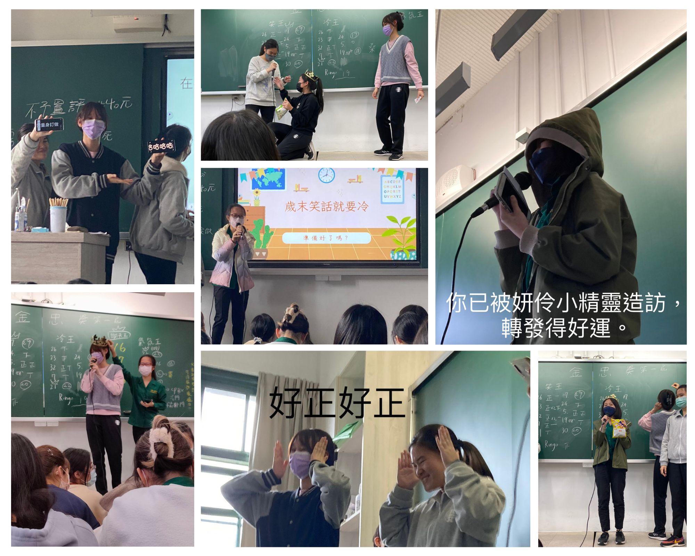
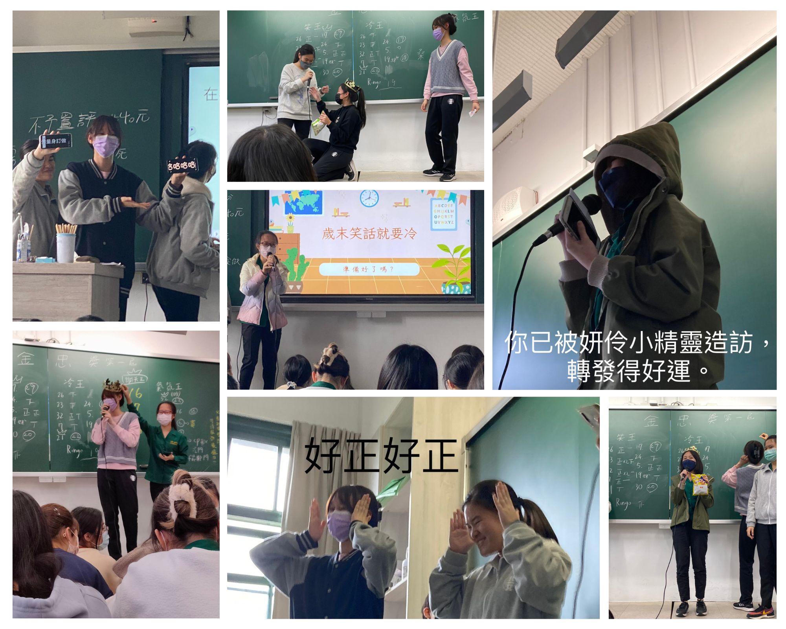

由「北一報報」記者為您現場報導！
冷笑話大賽！略略黃色的笑話與摻雜班上同學姓名哏的笑話都狠狠地紓解大家的壓力！
衷情告白，這如此溫馨的名字究竟是不是活動如其名呢？現場可以看到非常「溫馨」感謝老師與同學們的環節，甚至還有同學們感動相擁的情景！半年來的相處都化作同學們的真情告白，真是令人大感動啊！
謝天大會，命名自國中課本陳之藩的「謝天」！同學們感動互換小卡卡，充滿了對彼此的祝福！
活動圓滿落幕，大家對著鏡頭開心的比平方（平方會變正喔），為活動與忠班的2022畫下圓滿的句點。以上是記者小油條為您現場報導。
忠班幼兒園
照片牆
活動
特別感謝